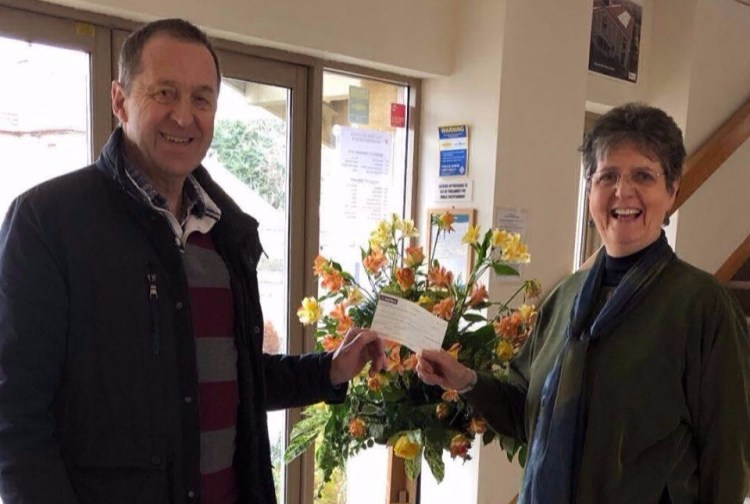

The Band

Thornbury Swing Band was formed in 2008 by Richard Gulliver, a local saxophone and clarinet player. Sadly, Richard passed away in early 2010 but the band proudly plays on in his memory, now under the direction of Chris White-Horne.
The band plays swing jazz instrumental and vocal numbers from the 1930s right up to modern times. The full, classic big band has a line up of saxophones, trombones, trumpets, and male and female vocalists, and is supported by a rhythm section of bass, guitar, keyboard and drums. We typically play 2×45–50 minute sets.
After a successful debut, we’re delighted to also offer the ‘TSB Small Band’. With a rhythm section of drums, bass, guitar and keys, a singer, and a horn & sax section, it’s ideal for smaller venues or as an addition to a full-band booking.
Raising money for good causes

Since 2008 we have donated and helped raise several thousand pounds for charities such as Brain Tumour Support, Bristol Children’s Hospital, the Lydia Biddlecombe Star Tribute Fund, Holly Hedge Animal Sanctuary, The Grand Appeal, and many more local good causes.
Band Members
Trombones: Chris White-Horne, Dave Smallwood, Rhodri Spearing, Sue Bannister
Trumpets: David Lloyd, Heather Staley, Simon Porter, Will Swales
Saxophones: Alison Boles, Bill Howgego, Hugh Price, Jill Watkins, Josh Horler
Vocals: Shairon Levy, Alison Boles
Rhythm Section: Luigi Caludi (bass), Steve Rowe (drums), Ian Jenner (guitar), Lynne Howgego (keys)
Join us
We are always looking for new members and supporters. Current vacancies: Trombone players.
We practise most Thursday evenings, 7:30–9:30 at Almondsbury Sports and Social Club, Gloucester Road, Almondsbury, Bristol, BS32 4AA.
Drop us a line if you’d like to get involved.
I am sure you are all still shattered from last night. You all worked so hard to make the evening go with a “Swing”. I had many comments last night and also this morning about how fantastic you all are and that they enjoyed the evening. — Event organiser